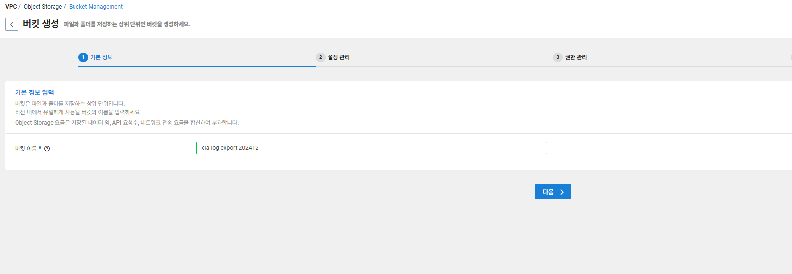
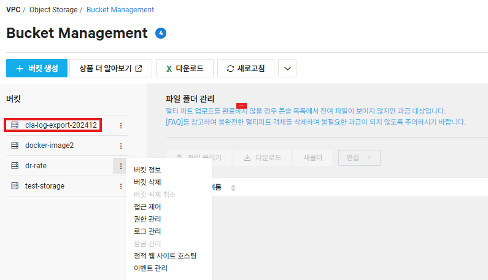
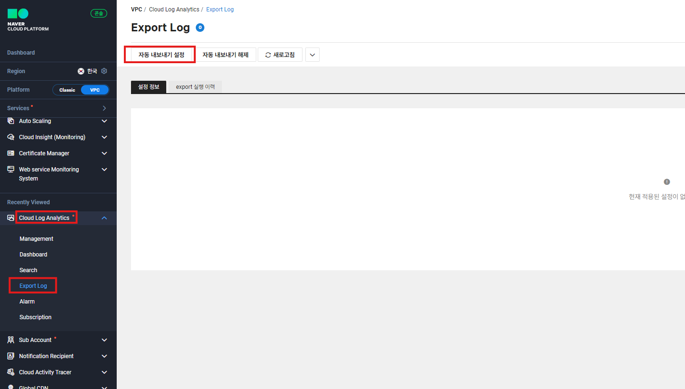
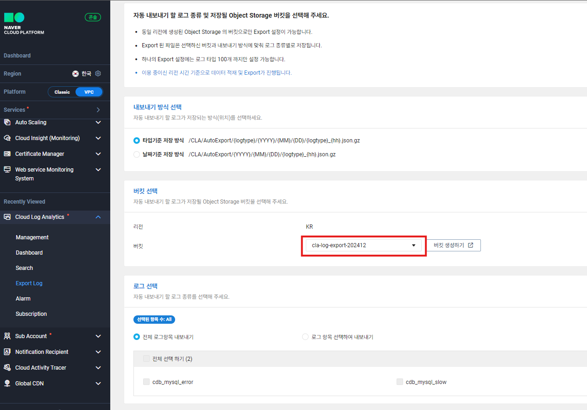
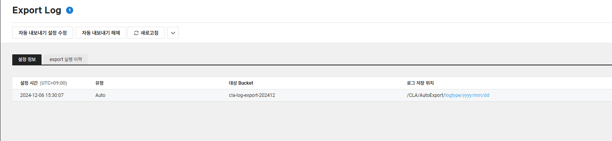

학습 목표
- CLA 서비스 신청 및 적용
CLA는 2가지 정책에 의해서 로그가 삭제가 된다
- 로그가 쌓인지 30일이 지났을 때
- (Standart 요금제를 사용할 경우) 100GB 저장 용량이 꽉 찼을 때
- 해결 방법 : Object Storage에 보냄
- Services > Storage > object storage 이동
- 상단의 ‘+버킷 생성’ 클릭
- 버킷 이름 : cla-log-export-오늘날짜 or 알파벳 추가 입력 후 하단의 ‘다음’ 버튼 클릭

- 설정 관리, 암호화 관리, 권한 관리는 디폴트 값 그대로 두고 하단의 ‘다음’ 버튼 클릭
- 최종 확인 페이지에서 ‘버킷 생성’ 클릭

- Services > Management and Governance > Cloud Log Analytics 이동
- Export Log 클릭 > 자동 내보내기 설정 클릭

- 이전 과정에서 만든 버킷(cla-log-export) 선택, 로그 종류는 secure 선택 후 하단의 ‘object storage 로 내보내기’ 클릭

